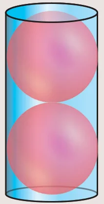

7.5 Conversion of Solids from one shape to another with no change in Volume
Conversions or Transformations becomes a common part of our daily life. For example, a gold smith melts a bar of gold to transform it to a jewel. Similarly, a kid playing with clay shapes it into different toys, a carpenter uses the wooden logs to form different house hold articles/furniture. Likewise, the conversion of solids from one shape to another is required for various purposes.
In this section we will be learning problems involving conversions of solids from one shape to another with no change in volume.
Example 7.29
A metallic sphere of radius 16 cm is melted and recast into small spheres each of radius 2 cm. How many small spheres can be obtained?
Solution
Let the number of small spheres obtained be \(n\).
Let \(r\) be the radius of each small sphere and \(R\) be the radius of metallic sphere.
Here, \(R = 16\) cm, \(r = 2\) cm
Now, \(n \times (\text{Volume of a small sphere}) = \text{Volume of big metallic sphere}\)
\(n\left(\frac{4}{3}\pi r^3\right) = \frac{4}{3}\pi R^3\)
\(n\left(\frac{4}{3}\pi \times 2^3\right) = \frac{4}{3}\pi \times 16^3\)
\(8n = 4096 \Rightarrow n = 512\)
Therefore, there will be 512 small spheres.
Example 7.30
A cone of height 24 cm is made up of modeling clay. A child reshapes it in the form of a cylinder of same radius as cone. Find the height of the cylinder.
Solution
Let \(h_1\) and \(h_2\) be the heights of a cone and cylinder respectively.
Also, let \(r\) be the radius of the cone.
Given that, height of the cone \(h_1 = 24\) cm; radius of the cone and cylinder \(r = 6\) cm
Since, Volume of cylinder \(=\) Volume of cone
\(\pi r^2 h_2 = \frac{1}{3}\pi r^2 h_1\)
\(h_2 = \frac{1}{3} \times h_1 \Rightarrow h_2 = \frac{1}{3} \times 24 = 8\)
Therefore, height of cylinder is 8 cm
Example 7.31
A right circular cylindrical container of base radius 6 cm and height 15 cm is full of ice cream. The ice cream is to be filled in cones of height 9 cm and base radius 3 cm, having a hemispherical cap. Find the number of cones needed to empty the container.
Solution
Let \(h\) and \(r\) be the height and radius of the cylinder respectively.
Given that, \(h = 15\) cm, \(r = 6\) cm
Volume of the container \(V = \pi r^2 h\) cubic units.
\(= \frac{22}{7} \times 6 \times 6 \times 15\)
Let, \(r_1 = 3\) cm, \(h_1 = 9\) cm be the radius and height of the cone.
Also, \(r_1 = 3\) cm is the radius of the hemispherical cap.
Volume of one ice cream cone \(= (\text{Volume of the cone} + \text{Volume of the hemispherical cap})\)
\(= \frac{1}{3}\pi r_1^2 h_1 + \frac{2}{3}\pi r_1^3\)
\(= \frac{1}{3} \times \frac{22}{7} \times 3 \times 3 \times 9 + \frac{2}{3} \times \frac{22}{7} \times 3 \times 3 \times 3\)
\(= \frac{22}{7} \times 9(3 + 2) = \frac{22}{7} \times 45\)
Number of cones \(= \dfrac{\text{volume of the cylinder}}{\text{volume of one ice cream cone}}\)
Number of ice cream cones needed \(= \dfrac{\frac{22}{7} \times 6 \times 6 \times 15}{\frac{22}{7} \times 45} = 12\)
Thus 12 ice cream cones are required to empty the cylindrical container.
Activity 5

The adjacent figure shows a cylindrical can with two balls. The can is just large enough so that two balls will fit inside with the lid on. The radius of each tennis ball is 3 cm. Calculate the following
- height of the cylinder.
- radius of the cylinder.
- volume of the cylinder.
- volume of two balls.
- volume of the cylinder not occupied by the balls.
- percentage of the volume occupied by the balls.